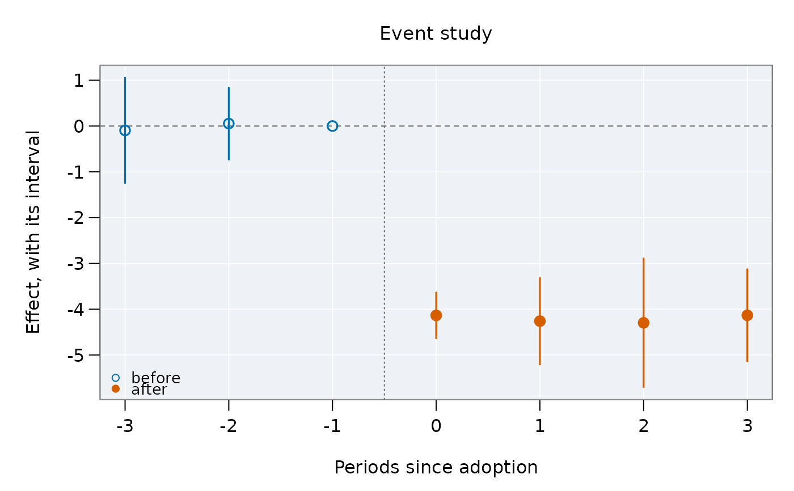
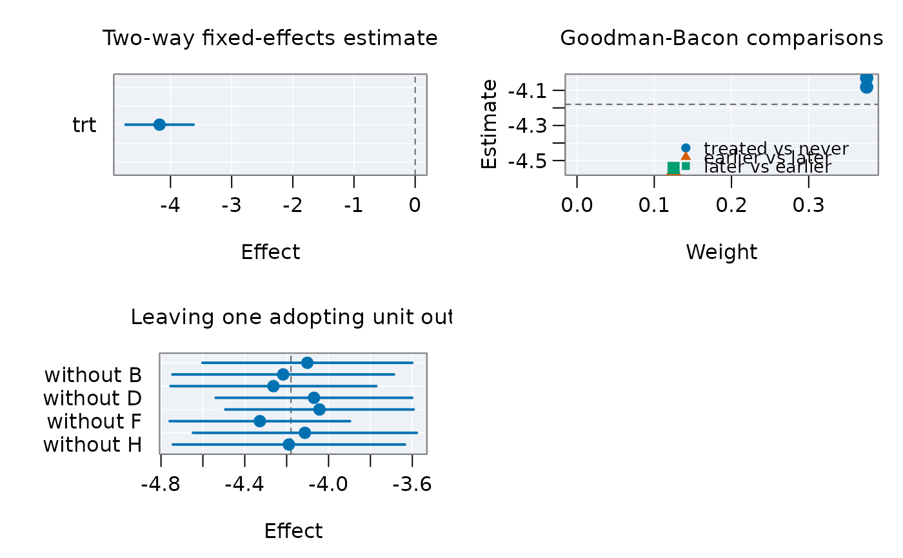
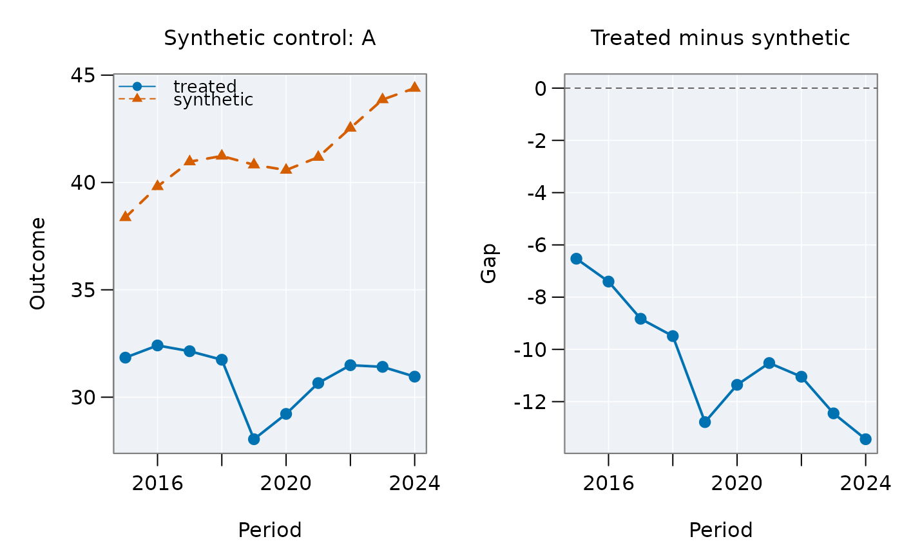
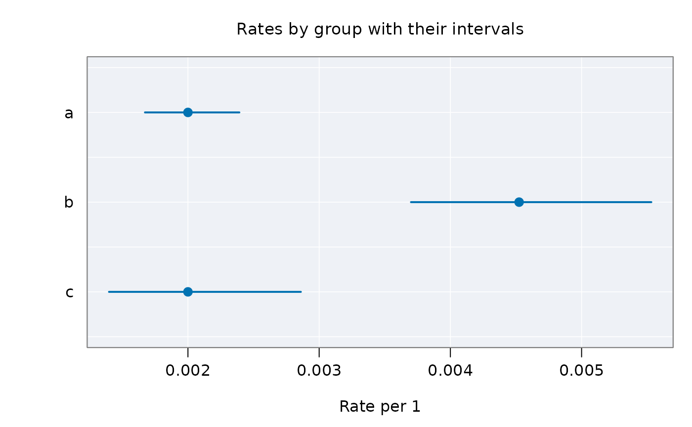
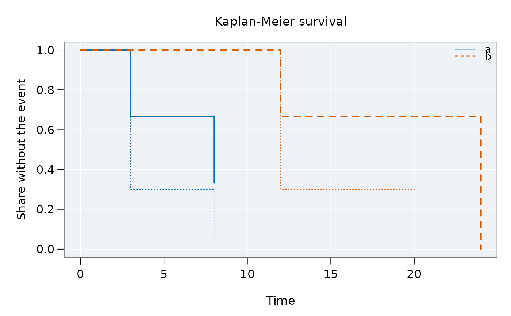
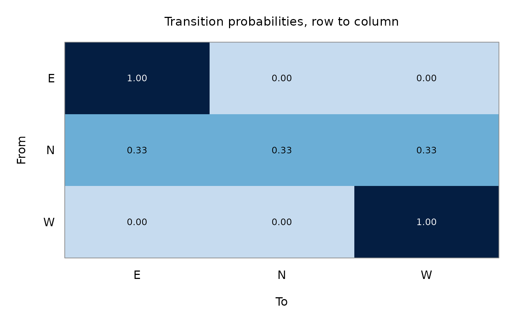
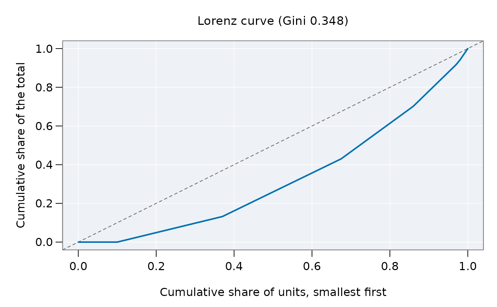

Every result of the package that holds something to draw has a plot()
method, on base graphics only. No argument beyond the object is needed;
every method takes the same customisation: main, col or pal, and
... passed to the base-graphics call, with the session look set by
plotopt(). Each method returns, invisibly, the data it drew (a data
frame, or a list of them), so the same picture can be drawn with any
other tool. Series that differ in colour also differ in line type or
point shape, and shaded cells carry their numbers, so no plot depends on
colour alone.
Usage
# S3 method for class 'cntreg'
plot(x, ..., main = NULL, col = NULL, pal = NULL)
# S3 method for class 'dastd'
plot(x, ..., main = NULL, col = NULL, pal = NULL)
# S3 method for class 'grprr'
plot(x, ..., main = NULL, col = NULL, pal = NULL)
# S3 method for class 'sirex'
plot(x, ..., main = NULL, col = NULL, pal = NULL)
# S3 method for class 'svymx'
plot(x, ..., main = NULL, col = NULL, pal = NULL)
# S3 method for class 'mndla'
plot(x, ..., main = NULL, col = NULL, pal = NULL)
# S3 method for class 'thrtst'
plot(x, ..., main = NULL, col = NULL, pal = NULL)
# S3 method for class 'sarml'
plot(x, ..., main = NULL, col = NULL, pal = NULL)
# S3 method for class 'spcure'
plot(x, ..., main = NULL, col = NULL, pal = NULL)
# S3 method for class 'mtrbnd'
plot(x, ..., main = NULL, col = NULL, pal = NULL)
# S3 method for class 'pbbnd'
plot(x, ..., main = NULL, col = NULL, pal = NULL)
# S3 method for class 'dkfig'
plot(x, ..., main = NULL, col = NULL, pal = NULL)
# S3 method for class 'smdbal'
plot(x, ..., main = NULL, col = NULL, pal = NULL)
# S3 method for class 'jmono'
plot(x, ..., main = NULL, col = NULL, pal = NULL)
# S3 method for class 'relchk'
plot(x, ..., main = NULL, col = NULL, pal = NULL)
# S3 method for class 'dissix'
plot(x, ..., main = NULL, col = NULL, pal = NULL)
# S3 method for class 'didfe'
plot(x, ..., main = NULL, col = NULL, pal = NULL)
# S3 method for class 'evtst'
plot(x, ..., main = NULL, col = NULL, pal = NULL)
# S3 method for class 'stgdid'
plot(x, ..., main = NULL, col = NULL, pal = NULL)
# S3 method for class 'synthc'
plot(x, ..., main = NULL, col = NULL, pal = NULL)
# S3 method for class 'sdidx'
plot(x, ..., main = NULL, col = NULL, pal = NULL)
# S3 method for class 'trndrr'
plot(x, ..., main = NULL, col = NULL, pal = NULL)
# S3 method for class 'stkflw'
plot(x, ..., main = NULL, col = NULL, pal = NULL)
# S3 method for class 'dktflw'
plot(x, ..., main = NULL, col = NULL, pal = NULL)
# S3 method for class 'jpipe'
plot(x, ..., main = NULL, col = NULL, pal = NULL)
# S3 method for class 'hsper'
plot(x, ..., main = NULL, col = NULL, pal = NULL)
# S3 method for class 'yoypx'
plot(x, ..., main = NULL, col = NULL, pal = NULL)
# S3 method for class 'cumrsk'
plot(x, ..., main = NULL, col = NULL, pal = NULL)
# S3 method for class 'agemix'
plot(x, ..., main = NULL, col = NULL, pal = NULL)
# S3 method for class 'apcie'
plot(x, ..., main = NULL, col = NULL, pal = NULL)
# S3 method for class 'kmrec'
plot(x, ..., main = NULL, col = NULL, pal = NULL)
# S3 method for class 'lftab'
plot(x, ..., main = NULL, col = NULL, pal = NULL)
# S3 method for class 'lnroc'
plot(x, ..., main = NULL, col = NULL, pal = NULL)
# S3 method for class 'lnkpr'
plot(x, ..., main = NULL, col = NULL, pal = NULL)
# S3 method for class 'cconc'
plot(x, ..., main = NULL, col = NULL, pal = NULL)
# S3 method for class 'crossk'
plot(x, ..., main = NULL, col = NULL, pal = NULL)
# S3 method for class 'bandx'
plot(x, ..., main = NULL, col = NULL, pal = NULL)
# S3 method for class 'jdgiv'
plot(x, ..., main = NULL, col = NULL, pal = NULL)
# S3 method for class 'xcser'
plot(x, ..., main = NULL, col = NULL, pal = NULL)
# S3 method for class 'hwkres'
plot(x, ..., main = NULL, col = NULL, pal = NULL)
# S3 method for class 'arwt'
plot(x, ..., main = NULL, col = NULL, pal = NULL)
# S3 method for class 'crsev'
plot(x, ..., main = NULL, col = NULL, pal = NULL)
# S3 method for class 'gmixlr'
plot(x, ..., main = NULL, col = NULL, pal = NULL)
# S3 method for class 'pedlr'
plot(x, ..., main = NULL, col = NULL, pal = NULL)
# S3 method for class 'hypq'
plot(x, ..., main = NULL, col = NULL, pal = NULL)
# S3 method for class 'lnsize'
plot(x, ..., main = NULL, col = NULL, pal = NULL)
# S3 method for class 'lostay'
plot(x, ..., main = NULL, col = NULL, pal = NULL)
# S3 method for class 'pinpl'
plot(x, ..., main = NULL, col = NULL, pal = NULL)
# S3 method for class 'mmshr'
plot(x, ..., main = NULL, col = NULL, pal = NULL)
# S3 method for class 'rptvic'
plot(x, ..., main = NULL, col = NULL, pal = NULL)
# S3 method for class 'ctabx'
plot(x, ..., main = NULL, col = NULL, pal = NULL)
# S3 method for class 'knxnr'
plot(x, ..., main = NULL, col = NULL, pal = NULL)
# S3 method for class 'qdrtst'
plot(x, ..., main = NULL, col = NULL, pal = NULL)
# S3 method for class 'trnmat'
plot(x, ..., main = NULL, col = NULL, pal = NULL)
# S3 method for class 'zcomp'
plot(x, ..., main = NULL, col = NULL, pal = NULL)
# S3 method for class 'kdsurf'
plot(x, ..., main = NULL, col = NULL, pal = NULL)
# S3 method for class 'prohs'
plot(x, ..., main = NULL, col = NULL, pal = NULL)
# S3 method for class 'sdbsim'
plot(x, ..., main = NULL, col = NULL, pal = NULL)
# S3 method for class 'bufas'
plot(x, ..., main = NULL, col = NULL, pal = NULL)
# S3 method for class 'cmpsc'
plot(x, ..., main = NULL, col = NULL, pal = NULL)
# S3 method for class 'ebshr'
plot(x, ..., main = NULL, col = NULL, pal = NULL)
# S3 method for class 'ibench'
plot(x, ..., main = NULL, col = NULL, pal = NULL)
# S3 method for class 'kscan'
plot(x, ..., main = NULL, col = NULL, pal = NULL)Value
Invisibly, the data drawn: a data frame, or for a method of several panels a list of data frames. A result missing a part the plot needs is refused.
Details
What each method draws:
Estimates with intervals, as a dot-and-interval (forest) chart:
cntreg(rate ratios, log scale),dastd,grprr,sirex,svymx,mndla,thrtst(thresholds),sarmlandspcure(coefficients),mtrbnd(bounds by treatment),pbbnd(bounds of published cells),dkfig(bounds on the dark figure),didfe(with its Goodman-Bacon comparisons and leave-one-out estimates when computed),smdbal(covariate balance),jmono(rates by judge),relchk(the readings of a table against the claim) anddissix(segregation indices).Effects by time since adoption:
evtstandstgdid, before adoption in open circles and after in filled ones.Paths over time:
synthcandsdidx(treated against its synthetic comparison),trndrr(series and fitted trend),stkflw(population, person-days, average daily population and length of stay),dktflw(clearance rate and pending cases),jpipe,hsper,yoypx(percent change with its interval),cumrsk,agemixandapcie.Curves:
kmrecandlftab(survival),lnroc(lineup ROC curves),lnkpr(the ROC of the linkage model),cconc(Lorenz curve),crossk(cross K function),bandx(the statistic against the top band's cap),jdgiv(sensitivity of the instrument),xcser(cross-correlations) andhwkres(time-rescaling residuals).Bars:
arwt,crsev,gmixlrandpedlr(log10 likelihood ratio by locus),hypq(workload of each unit),lnsize,lostay,mmshr(stacked, hatched),pinplandrptvic(observed against expected).Matrices and surfaces:
ctabx(residuals),knxnr(Knox ratios),qdrtst,trnmat,zcomp,kdsurf,prohs(hot cells outlined) andsdbsim.Points:
bufas(distances to sites),cmpsc(segment positions),ebshr(raw against shrunk values),ibench(rate against benchmark) andkscan(clusters as circles).
Examples
d <- expand.grid(year = 2015:2024, town = LETTERS[1:12])
i <- match(d$town, LETTERS)
first <- rep(c(2019, 2021, NA), each = 4)
d$first <- first[i]
d$bylaw <- as.integer(!is.na(d$first) & d$year >= d$first)
d$rate <- 30 + i + 0.5 * (d$year - 2015) - 4 * d$bylaw + sin(seq_len(120))
plot(evtst(d$rate, d$town, d$year, d$first, leads = 3, lags = 3))

plot(didfe(d$rate, d$town, d$year, d$bylaw, bacon = TRUE, loo = TRUE))

one <- d[d$town %in% c("A", "I", "J", "K", "L"), ]
plot(synthc(one$rate, one$town, one$year, one$first))

plot(grprr(c(a = 120, b = 95, c = 30), c(a = 6e4, b = 2.1e4, c = 1.5e4)))

plot(kmrec(c(3, 8, 8, 12, 20, 24), event = c(1, 1, 0, 1, 0, 1),
grp = c("a", "a", "a", "b", "b", "b")))

plot(trnmat(c("N", "N", "E", "N", "W", "W", "E", "E"),
c(1, 1, 1, 2, 2, 2, 3, 3), time = c(1, 2, 3, 1, 2, 3, 1, 2)))

set.seed(1)
plot(cconc(rpois(200, 2), nsim = 0))
